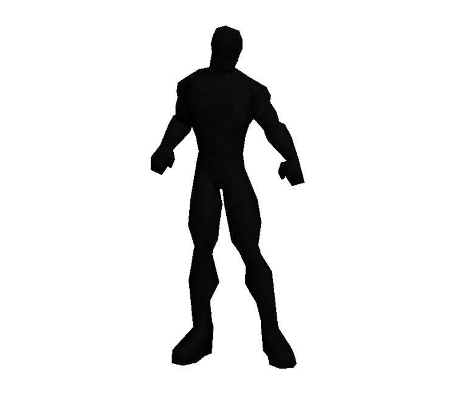

- Jogo desenvolvido para o #1 Projeto do bootcamp de Web Development na Ironhack São Paulo, turma #85WDFT.
- O jogo consiste em um quiz sobre atalhos do Visual Studio Code, a principal ferramenta utilizada para codar. O mesmo foi feito para auxiliar os alunos da turma.
- Para começar o jogador insere seu nome e seleciona uma dificuldade, as vidas do jogador e o tempo para responder as questões variam de acordo com a dificuldade selecionada.
- O Jogador perde uma vida ao errar uma questão, ou deixar de respondê-la no tempo necessário.
- O jogo acaba quando as vidas do jogador chegam a 0.
SELECIONE A DIFICULDADE

 10
10
PERGUNTA
FIM DE JOGO
você acertou questões e errou .
Vitor ficou tão impressionado com seu desempenho que esqueceu de fazer o CSS dessa página!
Vitor ficou puto com seu desempenho patético!
Jino gostou tanto do seu desempenho que até te contou a resposta da charada!
Jino foi buscar a charada do dia.
Karen ficou tão impressionada com seu desempenho que até foi almoçar!
Karen não gostou muito do seu desempenho, até foi pegar um café!